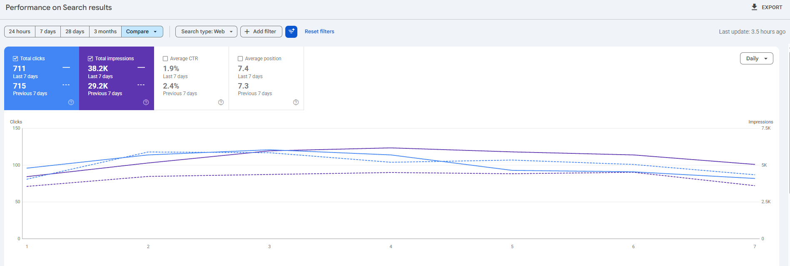
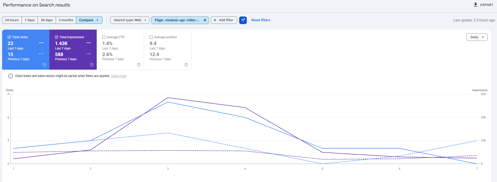
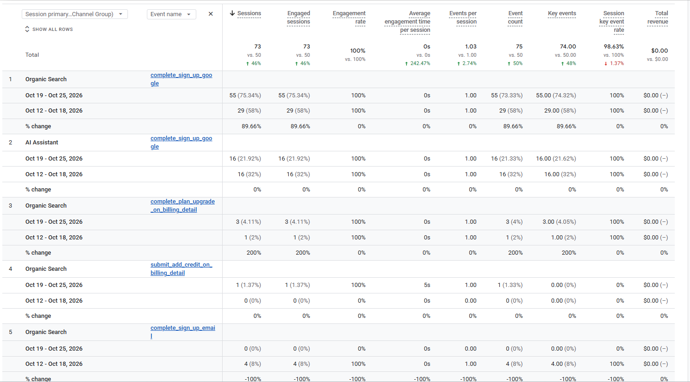
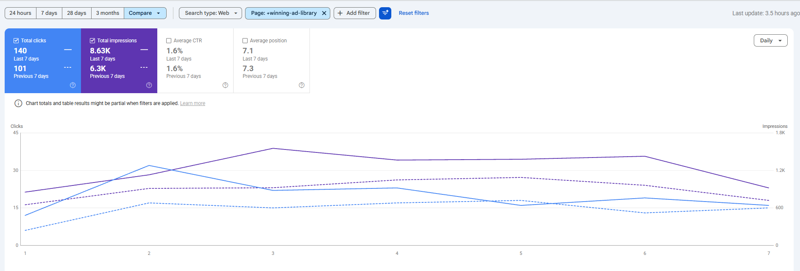
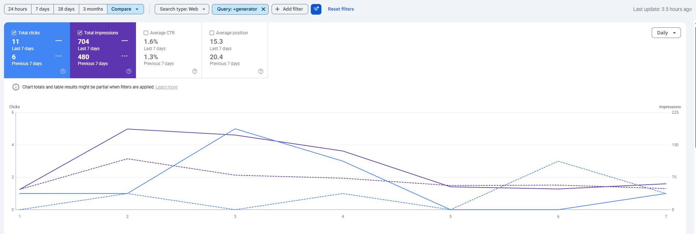
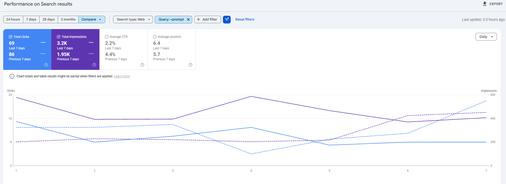

Promer
Báo cáo tuần · 19–25/10/2026
SEO & AI Search
Người dùng đang tìm thấy Promer từ đâu, điều gì đang hiệu quả, và tuần tới làm gì.
Nguồn: Google Search Console 18–24/10 so với 11–17/10 · Google Analytics 4 19–25/10 so với 12–18/10
Hiện trạng · Google Search Console · 18–24/10
Click từ Google đi ngang, lượt hiển thị tăng 31%
Click
711
tuần trước 715 · −1%
Impressions
38.2K
tuần trước 29.2K · +31%
CTR · vị trí TB
1.9% · 7.4
tuần trước 2.4% · 7.3

Ý nghĩa: impressions tăng ở các trang CTR thấp: /tools/ai-ugc-video-generator 588 → 1,426 (slide 3), blog holo-ai-review 1,413 → 2,244. Click giảm chủ yếu ở blog photoshoot (91 → 14, slide 9).
Promer · SEO Weekly 19–25/10/2026 · 2
Cơ hội · /tools/ai-ugc-video-generator
Impressions gấp 2.4 lần, nhiều key chưa có click
Impressions
1,426
tuần trước 588 · ×2.4
Click · CTR
23 · 1.6%
tuần trước 15 · 2.6%
Vị trí TB
9.4
tuần trước 12.4

Giải pháp: viết blog + làm video YouTube cho các key có impressions nhưng chưa có click: "how to create ugc videos with ai" (6 impressions, vị trí 9.2), "turn any product into a video ad" (3, vị trí 9.7).
Promer · SEO Weekly 19–25/10/2026 · 3
Cơ hội · AI Overviews, Gemini, ChatGPT
Đã có câu hỏi dạng prompt LLM dẫn tới trang UGC
| Câu hỏi (Google Search Console) | Impr. | Vị trí |
|---|---|---|
| what ai tools can make generated ad videos sound like real ugc creator content? | 3 | 8.0 |
| are there ai tools that can crank out no-shoot ads from my product photos and a voiceover script? | 2 | 2.5 |
| which vendors can generate ugc-style photos from templates that match platform guidelines? | 1 | 1.0 |
| what ai tools can turn my long product demo into multiple ugc-style ads for tiktok without me filming new footage? | 1 | 4.0 |
| what ai can analyze a product page and write video ad scripts? | 1 | 5.0 |
| how can i make ugc-style video ads with ai? | 1 | 4.0 |
| how do i create a ugc style ad from product photos? | 1 | 6.0 |
Giải pháp: rà lại từng câu hỏi để quyết định tối ưu landing page hiện tại hay viết bài mới, nhằm tăng tỷ lệ xuất hiện trên AI Overviews, Gemini và ChatGPT. Lượng còn nhỏ nhưng vị trí đã 1–8.
Promer · SEO Weekly 19–25/10/2026 · 4
Hiện trạng · GA4 · theo source / medium
GA4 giảm vì đợt test tool affiliate đã dừng
| Kênh · source / medium | 19–25/10 | 12–18/10 | Δ |
|---|---|---|---|
| Organic Search | 1,554 | 3,204 | −51.5% |
| · google / organic | 1,503 | 2,233 | −33% |
| · bing / organic | 30 | 488 | −94% |
| · arrm, expu-arrm, artt, expu-artt * | 5 | 305 | |
| · nguồn khác (yahoo, msn…) | 16 | 178 | |
| AI Assistant | 444 | 780 | −43% |
| · chatgpt.com | 424 | 529 | −20% |
| · claude.ai · gemini | 11 · 4 | 109 · 46 | |
| · arrm, artt, expu-* * | 3 | 74 | |
| · grok, perplexity, meta.ai… | 2 | 22 |
Lưu ý: tuần trước có traffic từ đợt test tool affiliate nội bộ (OneCommerce). * Các nguồn arrm / artt / expu-* giảm từ 305 về 5; blog photoshoot 523 → 25 và /ad-animation 449 → 9 session (google / organic). Các trang chính giờ khớp với click Google: fashion prompts 152 session / 129 click, product photography 145 / 120 (phụ lục).
Promer · SEO Weekly 19–25/10/2026 · 5
Hiện trạng · Đăng ký
Đăng ký từ Organic tăng 33 → 55
Organic Search
55
tuần trước 33 · +67%
AI Assistant
16
tuần trước 16 · ChatGPT 16
Trả tiền
3
nâng gói, từ Organic (tuần trước 1)

Ý nghĩa: đăng ký từ Organic tăng 67% (33 → 55), AI Assistant giữ nguyên 16 (đều từ ChatGPT). Nâng gói trả tiền tăng từ 1 lên 3, cả 3 đều từ Organic.
Promer · SEO Weekly 19–25/10/2026 · 6
Win 1
/winning-ad-library/: click tăng 39%
Click
140
tuần trước 101 · +39%
Impressions
8.63K
tuần trước 6.3K · +37%
CTR · vị trí TB
1.6% · 7.1
tuần trước 1.6% · 7.3

Ý nghĩa: các trang ngành đều tăng: coffee 2 → 13 click, bakery 5 → 7, massage 4 → 7, perfume 21 → 24. Blog đi kèm cũng tăng: perfume 4 → 26, shoe 7 → 24 click.
Promer · SEO Weekly 19–25/10/2026 · 7
Win 2
"generator": vị trí lên 20.4 → 15.3
Vị trí TB
15.3
tuần trước 20.4
Impressions
704
tuần trước 480 · +47%
Click
11
tuần trước 6

Ý nghĩa: nhóm "generator" đang tiến gần trang 1. Trang /tools/ai-ugc-video-generator: 23 click (15), 1,426 impressions (588), vị trí 9.4 (12.4).
Promer · SEO Weekly 19–25/10/2026 · 8
Vấn đề
Nhóm "prompt": click giảm 86 → 69
Click
69
tuần trước 86 · −20%
Bỏ "on prompt ads" *
28
tuần trước 73
Blog photoshoot
14
tuần trước 91 click

Nhận định: phần lớn mức giảm nằm ở blog photoshoot, trang có click tăng bất thường đầu tháng 10 (tháng 9 ~3 click/ngày). * "on prompt ads" là từ khoá thương hiệu của bên khác (41 click tuần này, 13 tuần trước).
Promer · SEO Weekly 19–25/10/2026 · 9
Theo dõi · 7 trang /tools/ ra mắt tuần trước
Cả 7 trang đã có lượt hiển thị trên Google
| Trang | Impressions | Click | Vị trí TB |
|---|---|---|---|
| Cyber Monday Advertisement Maker | 39 | 1 | 3.5 |
| AI Perfume Product Image Generator | 52 | 1 | 4.4 |
| AI Jewelry Image Generator | 22 | 0 | 6.0 |
| Black Friday Ad Generator | 11 | 0 | 14.0 |
| AI YouTube Shorts Generator | 11 | 0 | 10.0 |
| Etsy Product Photo Generator | 8 | 0 | 8.5 |
| AI TikTok UGC | 1 | 0 | 1.0 |
Ý nghĩa: tuần trước còn 2 trang chưa xuất hiện, tuần này cả 7 đã có impressions. Cyber Monday (vị trí 3.5) và Perfume (4.4) đã ở trang 1; Black Friday còn ở vị trí 14.
Promer · SEO Weekly 19–25/10/2026 · 10
Next steps · tuần 27/10–2/11
Việc tuần này
- Viết blog + làm video YouTube: "how to create ugc videos with ai", "turn any product into a video ad"
- Rà lại các câu hỏi dạng prompt LLM: tối ưu landing page hiện tại hay viết bài mới
- Tạo thêm landing page: "ai product review generator", "ai product unboxing generator", …
- Viết thêm bài blog theo ngành dẫn về /winning-ad-library/
- Theo dõi 7 trang /tools/ mới, ưu tiên Black Friday trước mùa sale
- Audit backlink hiện tại + nghiên cứu tool share backlink để outreach, tăng Domain Rating → tăng khả năng xuất hiện trên AI
Promer · SEO Weekly 19–25/10/2026 · 11
Phụ lục · tham khảo
Đối chiếu GA4 (google / organic) với click Google theo trang
| Landing page | GA4 19–25/10 | GSC 18–24/10 | GA4 ÷ GSC |
|---|---|---|---|
| /blog/ai-generated-fashion-prompts | 152 | 129 | 1.2× |
| /blog/ai-product-photography-prompts | 145 | 120 | 1.2× |
| /ad-prompt | 63 | 67 | 0.9× |
| / (trang chủ) | 215 | 56 | 3.8× |
| /blog/ai-prompts-for-photoshoot | 25 | 14 | 1.8× |
Trang bình thường ≈ 1–1.4×, trang chủ ≈ 3–4×. Tuần trước blog photoshoot là 523 session so với 91 click (≈ 5.7×). App /sign-in (263 session google / organic) không có trong bảng vì app không index trên Google.
Promer · SEO Weekly 19–25/10/2026 · 12